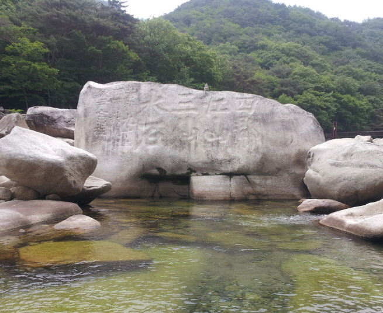

선암계곡

주요특징 및 설명
유형: 계곡
위치: 충청북도 단양군 단성면 가산리 및 대잠리 일원
주요 특징
선암계곡은 약 10km의 청정 계곡으로, 월악산의 물줄기가
남한강으로 흐르는 장소다. 단양8경 중 상선암, 중선암, 하선암 세 곳이 선암계곡에 자리하여 삼선계곡으로도 불린다.
또한, 계곡 주변에 소선암 자연휴양림, 소선암 오토캠핑장,
소선암 유원지, 특선암 야영장 등이 조성되어 있어 여름철
휴양지로 손꼽힌다.